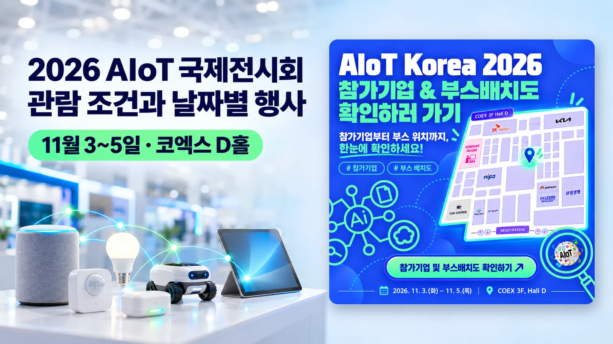

이지 자료실 · AI 도구툴
2026 AIoT 국제전시회 11월 3~5일 코엑스, 관람 조건과 날짜별 행사 정리
작성 · 글 이지연 · AIoT 국제전시회 공식 누리집·코엑스 안내(11.3 확인)와 과학기술정보통신부 보도자료(11.3) 보도 기준
안녕하세요, AI융합 예술교육가 이지쌤 이지연입니다. 인공지능(AI)과 사물인터넷(IoT)을 함께 쓰는 기술과 제품을 모아 보여 주는 '2026 AIoT 국제전시회'가 11월 3일 서울 코엑스에서 문을 열어 5일까지 이어집니다. 무료 입장이 되는 온라인 사전등록은 11월 2일 오후 6시에 끝났습니다. 이 글에는 관람 시간과 입장 조건, 날짜별 부대행사, 찾아가는 길과 문의처를 공식 누리집과 과학기술정보통신부 발표를 기준으로 정리했습니다.
- 과학기술정보통신부가 주최하는 '2026 AIoT 국제전시회'가 11월 3일(화)부터 5일(목)까지 서울 코엑스 3층 D홀에서 열립니다. 관람 시간은 매일 오전 10시부터 오후 5시까지입니다.
- 온라인 사전등록은 11월 2일(월) 오후 6시에 마감됐고, 현장등록 입장료는 1만 원입니다. 고등학생 이하는 입장할 수 없고, 대학생과 대학원생은 마지막 날인 11월 5일에만 관람할 수 있습니다.
- 과기정통부는 전시회와 부대행사를 묶은 '2026 AIoT Week Korea'에 국내외 170여 개 기업·기관이 참여한다고 밝혔습니다. 11월 4일에는 4개 트랙, 8개 세션으로 된 AIoT 국제 콘퍼런스가 열립니다.

| 행사 | AIoT 국제전시회(AIoT Korea Exhibition 2026), '2026 AIoT Week Korea'의 전시 행사 |
|---|---|
| 주최·주관 | 주최 과학기술정보통신부, 주관 한국AI사물인터넷협회·케이훼어스(K.Fairs), 후원 서울특별시 |
| 언제 | 2026년 11월 3일(화)~5일(목), 매일 오전 10시~오후 5시 |
| 어디서 | 서울 코엑스 3층 D홀 |
| 입장료 | 온라인 사전등록 무료(11월 2일 오후 6시 마감), 현장등록 10,000원 |
| 관람 대상 | 고등학생 이하 입장 제한, 대학생·대학원생은 11월 5일(목)에만 관람 |
| 문의 | 전시회 사무국 02-3454-1260, aiot@kaiot.or.kr |
| 누리집 | aiotkorea.or.kr |
1. AIoT 국제전시회는 어떤 행사인가
AIoT는 인공지능(AI)과 사물인터넷(IoT)을 합친 말로, 인터넷에 연결된 기기와 센서에 AI를 더한 기술을 가리킵니다. 과학기술정보통신부는 11월 3일 보도자료에서 올해 'AIoT Week Korea'의 주제를 '연결을 넘어, AI가 만드는 새로운 가치'로 소개했습니다. AIoT 국제전시회는 국제 콘퍼런스, 시상식, 발표회와 함께 이 주간 행사로 묶여 열립니다.
공식 누리집의 전시회 개요에 적힌 전시 분야는 AI와 IoT를 합친 제품·솔루션과 플랫폼, 디바이스, 통신기기, 보안, 제조, 산업·생활 안전과 재해·재난, 스마트 홈·오피스·헬스케어, 스마트 시티, 에너지·환경, 유통·물류·농수축산입니다.
보도에 따르면 SK텔레콤, 현대자동차그룹, 기아, 한국전자통신연구원(ETRI), 한국전자기술연구원(KETI) 등이 전시에 참가합니다. 함께 열리는 '2026 AI&IoT 쇼케이스'에서는 국내 중소기업 8곳이 제조 AI 에이전트, 온디바이스 AI, IoT 보안 기술을 선보이고 수요 기업과 사업 상담을 합니다. 참가기업 전체 목록과 부스 위치는 공식 누리집의 「참가기업 및 제품 소개」와 「전시회 부스 배치도」 메뉴에 있습니다.
2. 관람 시간과 입장 조건
전시장은 11월 3일부터 5일까지 매일 오전 10시에 열어 오후 5시에 닫습니다. 온라인 사전등록을 마친 사람은 무료로 입장하며, 사전등록은 11월 2일(월) 오후 6시에 마감됐습니다. 11월 3일 공식 누리집의 사전등록 단추를 누르면 '사전등록 기간이 아닙니다'라는 안내가 나옵니다.
사전등록을 하지 않았다면 현장등록으로 들어가며, 입장료는 10,000원입니다. 공식 누리집과 코엑스 전시 안내의 금액이 같습니다. 현장등록 창구의 위치와 등록 절차는 공식 누리집 관람 안내에 나와 있지 않습니다.
공식 누리집은 이 전시회를 비즈니스 전시회로 안내하며, 고등학생 이하는 입장이 제한된다고 적었습니다. 대학생과 대학원생은 전시회 마지막 날인 11월 5일(목)에만 관람할 수 있습니다.
3. 날짜별 부대행사
과기정통부 보도자료를 다룬 11월 3일 보도(데일리안, 산업종합저널)에 나온 날짜별 행사입니다.
| 날짜 | 행사 | 내용 |
|---|---|---|
| 11.3(화) | AIoT Awards 2026 | IoT 활성화 유공 표창과 제4회 AIoT 혁신대상 시상식 |
| 11.3(화) | 신제품·솔루션 발표회 | 기업들이 AIoT 신제품과 솔루션을 발표합니다. |
| 11.3(화) | 지능형 홈·미래 도시 세미나 | 지능형 홈과 미래 도시·공간 서비스를 다룹니다. |
| 11.4(수) | AIoT 국제 콘퍼런스 | 4개 트랙, 8개 세션. 데일리안 보도에 따르면 피지컬 AI, 자율협업 IoT, 보안 위협과 글로벌 규제 대응을 다룹니다. |
| 11.5(목) | OCEAN Summit 2026 | 오픈소스와 국제표준 동향을 다룹니다. |
행사별 시작 시각과 장소는 공식 누리집 공지 「AIoT Week Korea 2026 전체 프로그램 안내」(10월 22일)에 첨부된 브로슈어에 있고, 콘퍼런스 등록은 누리집의 「컨퍼런스 사전등록」 메뉴에서 따로 받습니다.
데일리안 보도에 따르면 과기정통부 임정규 정보보호네트워크정책관은 환영사에서 AI와 IoT의 융합이 산업 현장의 생산성과 서비스 혁신으로 이어지도록 국내 기업의 AIoT 기술 활용과 성장을 지원하겠다고 밝혔습니다.
4. 찾아가는 길과 문의처
전시장은 서울 강남구 코엑스 3층 D홀입니다. 공식 누리집 「찾아오시는 길」에 따르면 지하철 2호선 삼성역 5·6번 출구와 9호선 봉은사역 7번 출구에서 코엑스몰로 바로 이어지는 통로가 있고, 7호선 청담역 2번 출구에서는 걸어서 20~30분 걸립니다.
관람 문의는 전시회 사무국(02-3454-1260, aiot@kaiot.or.kr)에서 받습니다. 코엑스 누리집의 전시 안내에는 담당 전화가 02-555-7153으로 적혀 있습니다.
참고 자료
- 과학기술정보통신부 보도자료 「"연결을 넘어, AI가 만드는 새로운 가치" 「2026 AIoT Week Korea」 개막」 (2026.11.3)
- AIoT 국제전시회 공식 누리집(전시회 개요·관람신청·찾아오시는 길·전체 프로그램 안내) (2026.11.3 확인)
- 코엑스 전시 안내 「AIoT 국제전시회」 (2026.11.3 확인)
- 데일리안 「과기정통부 '2026 AIoT 진흥주간' 개막…170여 개 기업 참여」 (2026.11.3)
- 산업종합저널 「연결 넘어 스스로 판단하고 협력하는 사물들…'2026 AIoT Week Korea' 개막」 (2026.11.3)
- 한국AI사물인터넷협회 누리집 (2026.11.3 확인)
이 글은 AIoT 국제전시회 공식 누리집과 코엑스 전시 안내를 2026년 11월 3일에 확인해 정리했습니다. 과학기술정보통신부 보도자료 본문은 첨부 문서로만 올라와 있어, 같은 날 이 보도자료를 다룬 데일리안·산업종합저널 기사와 맞춰 확인했습니다. 주관 기관 이름은 전시회 누리집 개요 페이지에 '한국사물인터넷협회'로, 코엑스 안내와 협회 누리집에 '한국AI사물인터넷협회'로 적혀 있어 협회 누리집 표기를 따랐습니다.
함께 읽을 글